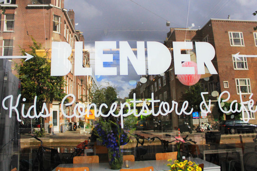
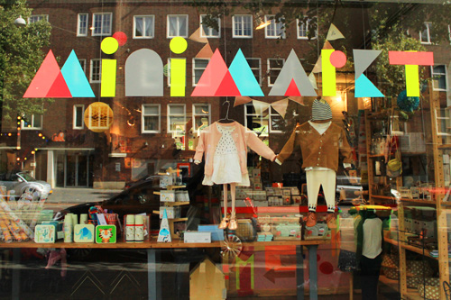

Child-friendly restaurants
Best places to eat in Zuid
1. Blender: it is a kid concept store and café which puts together entertainment for kids and nice food for parents who also want to enjoy themselves.
Address: Beethovenstraat 5A Open hours: Monday to Sunday from 9.00 to 17.30
2. MiniMarkt: another concept store that puts together shopping, hair dressing, playing and food. Perfect to spend a couple of hours as well as enjoy some homemade food such as cakes, sandwiches, and quiches.
Address: Ruysdaelstraat 9-11-13 Open hours: Monday to Sunday from 9.00 to 17.30
3. De Kleine Parade: situated right in the heart of De Pijp, “The Little Parade” is a nice and creative place designed for families with small children dedicated to shopping as well as food. There is a small and safe area where kids can enjoy themselves while eat something nutritional from sandwiches to sugar-free cookies.
Address: Gerard Doustraat 142-144 Open hours: Monday to Sunday from 9.00 to 17.00
4. @SEVEN:- is a restaurant meant to bring together the need of the parents to have a nice meal and kids to have fun. There is a special corner for kids to play as well as a dedicated part of the menu for them so both can enjoy their time!
Address: Scheldestraat 92 Open hours: Monday to Friday from 7.00 to 17.00
 